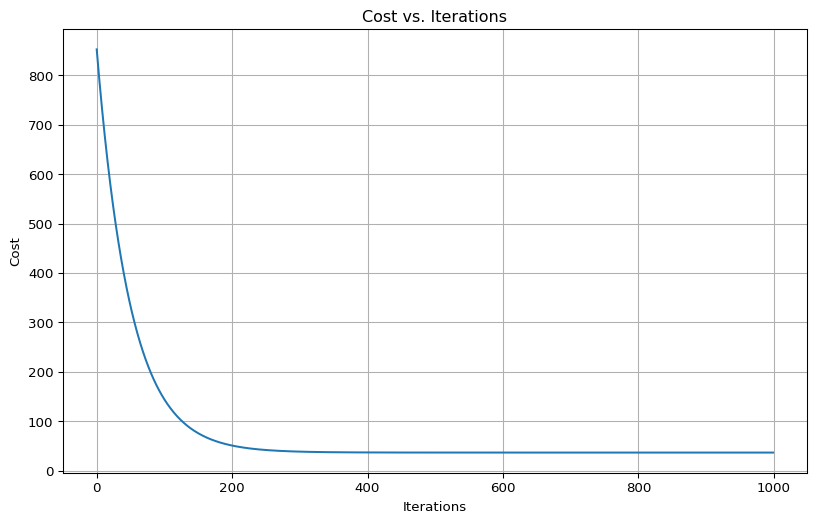
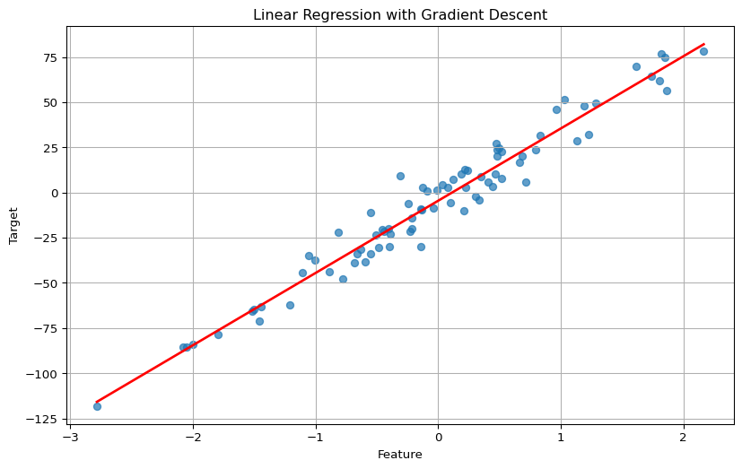
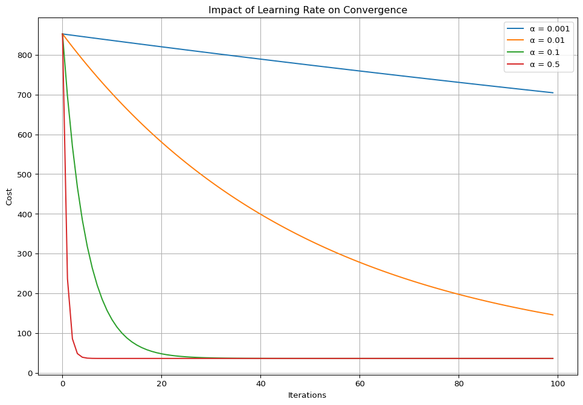
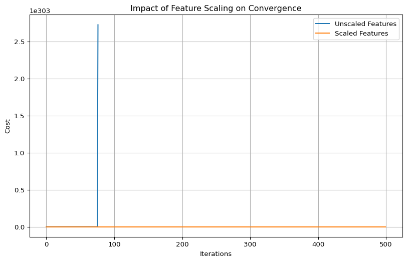
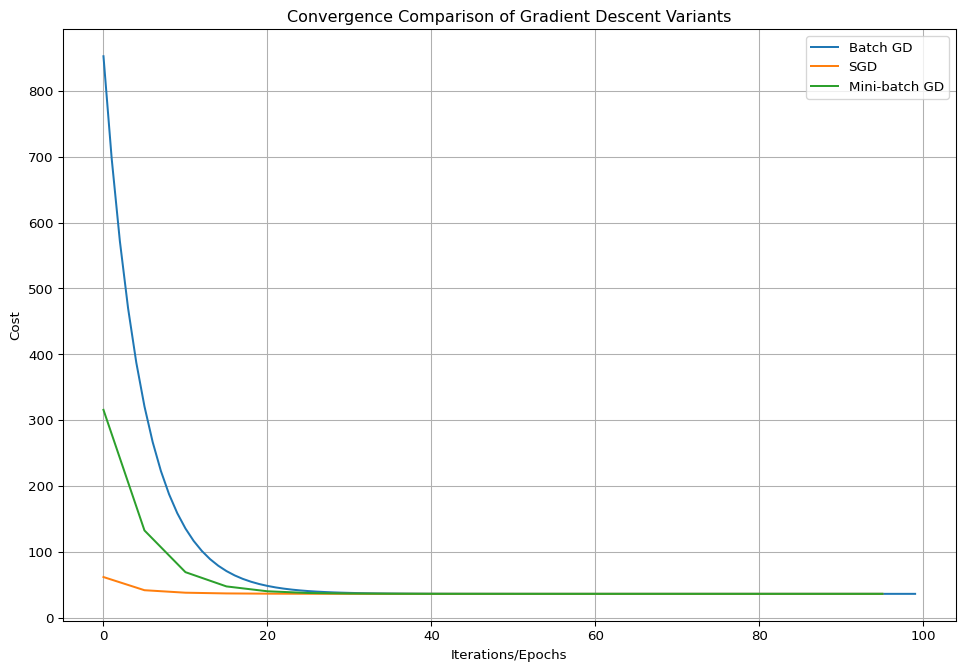

10Gradient Descent: Optimization in Machine Learning
Gradient Descent is a fundamental optimization algorithm in machine learning used to minimize a cost function by iteratively adjusting model parameters. It’s the engine that powers many machine learning algorithms, from simple linear regression to complex neural networks.
At its core, gradient descent is based on a simple yet powerful idea: to find the minimum of a function, we can follow the direction of the steepest descent. Mathematically, this direction is given by the negative gradient of the function.
10.1 The Intuition Behind Gradient Descent
Think of gradient descent as descending a mountain in foggy conditions where you can only see a small area around you. To reach the bottom (the minimum), you:
Feel the ground around you to determine the steepest downward direction (calculate the gradient)
Take a step in that direction (update parameters)
Repeat until you reach a point where all directions lead upward (convergence)
The cost function represents the “mountain landscape” in this analogy, with its valleys corresponding to low error and its peaks to high error.
10.2 Mathematical Foundation
For a function J(θ), where θ represents our model parameters, the gradient ∇J(θ) points in the direction of the steepest increase. Therefore, to minimize J(θ), we update θ as follows:
θ = θ - α·∇J(θ)
Where: - α is the learning rate (step size) - ∇J(θ) is the gradient of the cost function with respect to parameters θ
For a linear regression problem with mean squared error (MSE) cost function, this translates to:
∇J(θ) = (1/m) · X^T · (X·θ - y)
Where: - m is the number of training examples - X is the feature matrix - y is the target vector - θ is the parameter vector
10.3 How Gradient Descent Works
Gradient Descent operates through a systematic process:
Random Initialization: Begin with arbitrary parameter values. This represents our starting point on the “mountain.”
Calculate the Gradient: Compute the gradient (slope) of the cost function with respect to each parameter. This tells us which direction leads downhill most steeply.
Update Parameters: Adjust parameters in the opposite direction of the gradient. The size of this adjustment is controlled by the learning rate.
Repeat Until Convergence: Continue until the gradient approaches zero, indicating a minimum.
The algorithm’s success hinges on the learning rate, which controls the step size in each iteration.
import numpy as npimport matplotlib.pyplot as pltfrom sklearn.datasets import make_regressionfrom sklearn.preprocessing import StandardScalerfrom sklearn.model_selection import train_test_split# Generate a simple regression datasetX, y = make_regression(n_samples=100, n_features=1, noise=10, random_state=42)X = StandardScaler().fit_transform(X)y = y.reshape(-1, 1)# Split dataX_train, X_test, y_train, y_test = train_test_split(X, y, test_size=0.2, random_state=42)# Implement basic gradient descent for linear regressiondef gradient_descent(X, y, learning_rate=0.01, iterations=1000):# Initialize parameters (weights and bias) m = X.shape[0] theta = np.zeros((2, 1)) # [w, b] X_b = np.c_[np.ones((m, 1)), X] # Add intercept term# To store cost history cost_history = []for i inrange(iterations):# Calculate predictions predictions = X_b.dot(theta)# Calculate error error = predictions - y# Calculate gradients gradients = (1/m) * X_b.T.dot(error)# Update parameters theta = theta - learning_rate * gradients# Calculate cost (MSE) cost = (1/(2*m)) * np.sum(np.square(error)) cost_history.append(cost)return theta, cost_history# Run gradient descenttheta, cost_history = gradient_descent(X_train, y_train)# Visualize cost over iterationsplt.figure(figsize=(10, 6))plt.plot(cost_history)plt.xlabel('Iterations')plt.ylabel('Cost')plt.title('Cost vs. Iterations')plt.grid(True)plt.show()# Visualize the regression lineplt.figure(figsize=(10, 6))plt.scatter(X_train, y_train, alpha=0.7)X_new = np.array([[np.min(X_train)], [np.max(X_train)]])X_new_b = np.c_[np.ones((2, 1)), X_new]y_predict = X_new_b.dot(theta)plt.plot(X_new, y_predict, "r-", linewidth=2)plt.xlabel('Feature')plt.ylabel('Target')plt.title('Linear Regression with Gradient Descent')plt.grid(True)plt.show()print(f"Optimized parameters: w = {theta[1][0]:.4f}, b = {theta[0][0]:.4f}")


Optimized parameters: w = 39.9781, b = -4.4957
10.4 The Learning Rate: A Delicate Balance
The learning rate (α) is a hyperparameter that determines how large each step is during optimization. Its selection involves a fundamental trade-off:
Too Small: Convergence is extremely slow, requiring many iterations. This is computationally inefficient but less likely to miss the minimum.
Too Large: The algorithm overshoots minima, potentially diverging instead of converging. This manifests as increasing cost values over iterations.
An optimal rate ensures steady progress toward the minimum without overshooting. In practice, finding the right learning rate often involves experimentation.
10.4.1 The Goldilocks Principle in Learning Rates
Think of learning rate selection as the “Goldilocks principle” – not too hot, not too cold, but just right:
“Too cold” (small α): The algorithm moves very cautiously, taking tiny steps. While it’s unlikely to overshoot, it might take an impractically long time to reach the minimum.
“Too hot” (large α): The algorithm takes aggressive steps and might bounce around or completely miss the minimum, potentially even diverging (costs increase).
“Just right” (optimal α): The algorithm makes steady progress, converging to the minimum efficiently.
Learning rate scheduling techniques (discussed later) attempt to get the best of both worlds by starting with larger steps and gradually reducing them.
def compare_learning_rates(X, y, learning_rates=[0.001, 0.01, 0.1, 0.5], iterations=100): plt.figure(figsize=(12, 8)) m = X.shape[0] X_b = np.c_[np.ones((m, 1)), X]for lr in learning_rates: theta = np.zeros((2, 1)) cost_history = []for i inrange(iterations): predictions = X_b.dot(theta) error = predictions - y gradients = (1/m) * X_b.T.dot(error) theta = theta - lr * gradients cost = (1/(2*m)) * np.sum(np.square(error)) cost_history.append(cost) plt.plot(cost_history, label=f'α = {lr}') plt.xlabel('Iterations') plt.ylabel('Cost') plt.title('Impact of Learning Rate on Convergence') plt.legend() plt.grid(True) plt.show()# Compare different learning ratescompare_learning_rates(X_train, y_train)

10.5 Challenges in Gradient Descent
Gradient Descent faces several challenges that arise from the nature of optimization landscapes:
10.5.1 1. Non-Convex Cost Functions
In many machine learning models, especially neural networks, the cost function isn’t convex—meaning it has multiple local minima, saddle points, and plateaus. This creates several challenges:
Local Minima: The algorithm might settle in a suboptimal local minimum rather than finding the global minimum. This is particularly problematic in deep learning.
Saddle Points: Points where the gradient is zero in all directions, but it’s neither a maximum nor a minimum. These can slow down convergence significantly.
Plateaus: Flat regions in the cost function where the gradient is close to zero, slowing progress despite being far from a minimum.
10.5.2 2. The Ravine Problem
In some cost functions, the surface has elongated valley-like structures (ravines). In these cases, the gradient often points across the ravine rather than along it toward the minimum. This causes the algorithm to oscillate from one side to another, making slow progress.
10.5.3 3. Feature Scaling Issues
When features have different scales, the cost function contours become elongated ellipses rather than circles. This creates a similar ravine problem, where the gradient doesn’t point directly toward the minimum.
To address this issue, feature scaling techniques like standardization are essential:
# Demonstrating the importance of feature scalingX_multi, y_multi = make_regression(n_samples=100, n_features=2, noise=10, random_state=42)# Scale one feature to be much largerX_multi[:, 1] = X_multi[:, 1] *100# Split dataX_train_unscaled, X_test_unscaled, y_train_multi, y_test_multi = train_test_split( X_multi, y_multi.reshape(-1, 1), test_size=0.2, random_state=42)# Create scaled versionscaler = StandardScaler()X_train_scaled = scaler.fit_transform(X_train_unscaled)# Run gradient descent on both scaled and unscaled datadef run_gd_experiment(X, y, title, learning_rate=0.01, iterations=500): m = X.shape[0] n_features = X.shape[1] theta = np.zeros((n_features +1, 1)) X_b = np.c_[np.ones((m, 1)), X] cost_history = []for i inrange(iterations): predictions = X_b.dot(theta) error = predictions - y gradients = (1/m) * X_b.T.dot(error) theta = theta - learning_rate * gradients cost = (1/(2*m)) * np.sum(np.square(error)) cost_history.append(cost)return cost_history# Compare convergence with and without scalingcost_unscaled = run_gd_experiment(X_train_unscaled, y_train_multi, "Unscaled")cost_scaled = run_gd_experiment(X_train_scaled, y_train_multi, "Scaled")plt.figure(figsize=(10, 6))plt.plot(cost_unscaled, label='Unscaled Features')plt.plot(cost_scaled, label='Scaled Features')plt.xlabel('Iterations')plt.ylabel('Cost')plt.title('Impact of Feature Scaling on Convergence')plt.legend()plt.grid(True)plt.show()
C:\Users\roess\AppData\Local\Temp\ipykernel_16444\433023471.py:29: RuntimeWarning:
overflow encountered in square
C:\Users\roess\Documents\repos\Notes\myvenv312\Lib\site-packages\numpy\_core\fromnumeric.py:86: RuntimeWarning:
overflow encountered in reduce
C:\Users\roess\AppData\Local\Temp\ipykernel_16444\433023471.py:28: RuntimeWarning:
invalid value encountered in subtract

10.5.4 4. Vanishing and Exploding Gradients
In deep neural networks, gradients can either: - Become extremely small (vanish) as they’re propagated backward through many layers - Become extremely large (explode) in certain network architectures
Both problems hamper effective training. Modern techniques like batch normalization, residual connections, and careful weight initialization help address these issues.
11 Types of Gradient Descent
There are three main variants of Gradient Descent, each with its own strengths and use cases. The primary difference is how much data they use to compute each parameter update.
11.1 1. Batch Gradient Descent
Batch Gradient Descent calculates the gradient using the entire dataset before updating parameters. This ensures consistent steps toward the minimum but can be computationally expensive for large datasets.
11.1.1 Conceptual Understanding
Think of Batch GD as carefully surveying the entire mountain before taking each step. This provides the most accurate direction but requires significant effort before making any progress.
11.1.2 Key Properties
Deterministic: Always takes the same path for the same starting point
Memory-intensive: Must process the entire dataset in memory
Smooth convergence: Progress is steady with minimal fluctuations
Computationally expensive: Especially for large datasets
def batch_gradient_descent(X, y, learning_rate=0.01, iterations=1000): m = X.shape[0] n_features = X.shape[1] theta = np.zeros((n_features +1, 1)) X_b = np.c_[np.ones((m, 1)), X] cost_history = []for i inrange(iterations):# Use entire dataset for each update predictions = X_b.dot(theta) error = predictions - y gradients = (1/m) * X_b.T.dot(error) theta = theta - learning_rate * gradients cost = (1/(2*m)) * np.sum(np.square(error)) cost_history.append(cost)# Early stopping condition (optional)if i >0andabs(cost_history[i] - cost_history[i-1]) <1e-10:breakreturn theta, cost_history
11.2 2. Stochastic Gradient Descent (SGD)
Stochastic Gradient Descent updates parameters using a single randomly selected training instance at each step. This makes it faster and more memory-efficient but introduces more randomness.
11.2.1 Conceptual Understanding
SGD is like taking quick steps based on whatever small part of the mountain you can immediately see. The direction might not be perfect, but you can take many more steps in the same amount of time.
11.2.2 Key Properties
Randomized: Takes a different path each time
Memory-efficient: Processes one example at a time
Noisy convergence: Path includes fluctuations and bounces
Ability to escape local minima: Randomness helps jump out of suboptimal valleys
Can work with streaming data: Doesn’t need the entire dataset at once
def stochastic_gradient_descent(X, y, learning_rate=0.01, epochs=10): m = X.shape[0] n_features = X.shape[1] theta = np.zeros((n_features +1, 1)) X_b = np.c_[np.ones((m, 1)), X] cost_history = []for epoch inrange(epochs):# Shuffle data at the beginning of each epoch indices = np.random.permutation(m) X_shuffled = X_b[indices] y_shuffled = y[indices]for i inrange(m):# Use a single instance for each update xi = X_shuffled[i:i+1] yi = y_shuffled[i:i+1] prediction = xi.dot(theta) error = prediction - yi gradients = xi.T.dot(error)# Learning rate scheduling (optional) lr = learning_rate / (epoch * m + i +1)**0.5 theta = theta - lr * gradients# Calculate cost after each epoch (using full dataset) predictions = X_b.dot(theta) cost = (1/(2*m)) * np.sum(np.square(predictions - y)) cost_history.append(cost)return theta, cost_history
11.2.3 Learning Rate Scheduling in SGD
Learning rate scheduling gradually reduces the learning rate over time, helping SGD settle at a minimum. This combines the benefits of larger initial steps (faster progress) with smaller later steps (precision).
Common scheduling strategies include:
Time-based decay: α = α₀ / (1 + kt)
Step decay: α = α₀ × 0.5^(t/τ)
Exponential decay: α = α₀ × e^(-kt)
Where: - α₀ is the initial learning rate - t is the iteration number or epoch - k and τ are hyperparameters
Mini-Batch Gradient Descent combines the best of both worlds: it updates parameters using small random subsets (mini-batches) of the training data.
11.3.1 Conceptual Understanding
This is like surveying a representative sample of the mountain before each step. The direction isn’t as precise as Batch GD but is more accurate than SGD, while maintaining computational efficiency.
11.3.2 Key Properties
Semi-randomized: Less variance than SGD, more than Batch GD
Good memory efficiency: Only needs to process a batch at a time
Vectorization-friendly: Can leverage parallel processing
Balance of stability and speed: Smoother convergence than SGD, faster than Batch GD
Industry standard: Most practical implementations use this approach
def mini_batch_gradient_descent(X, y, batch_size=32, learning_rate=0.01, epochs=10): m = X.shape[0] n_features = X.shape[1] theta = np.zeros((n_features +1, 1)) X_b = np.c_[np.ones((m, 1)), X] cost_history = [] n_batches =int(np.ceil(m / batch_size))for epoch inrange(epochs):# Shuffle data at the beginning of each epoch indices = np.random.permutation(m) X_shuffled = X_b[indices] y_shuffled = y[indices]for batch inrange(n_batches):# Calculate batch indices start_idx = batch * batch_size end_idx =min((batch +1) * batch_size, m)# Extract mini-batch X_mini = X_shuffled[start_idx:end_idx] y_mini = y_shuffled[start_idx:end_idx]# Update parameters using mini-batch predictions = X_mini.dot(theta) error = predictions - y_mini gradients = (1/len(X_mini)) * X_mini.T.dot(error) theta = theta - learning_rate * gradients# Calculate cost after each epoch (using full dataset) predictions = X_b.dot(theta) cost = (1/(2*m)) * np.sum(np.square(predictions - y)) cost_history.append(cost)return theta, cost_history
11.4 Theoretical Understanding of Batch Size Impact
The batch size directly affects:
Gradient estimation quality: Larger batches provide more accurate gradient estimates
Update frequency: Smaller batches allow more frequent updates
Generalization performance: Research suggests very large batches may lead to poorer generalization
def compare_gd_variants(X, y):# Prepare data m = X.shape[0] X_scaled = StandardScaler().fit_transform(X)# Run Batch GD theta_bgd, cost_bgd = batch_gradient_descent(X_scaled, y, learning_rate=0.1, iterations=100)# Run SGD theta_sgd, cost_sgd = stochastic_gradient_descent(X_scaled, y, learning_rate=0.1, epochs=20)# Run Mini-batch GD theta_mbgd, cost_mbgd = mini_batch_gradient_descent(X_scaled, y, batch_size=16, learning_rate=0.1, epochs=20)# Visualize convergence plt.figure(figsize=(12, 8)) plt.plot(cost_bgd, label='Batch GD') plt.plot(range(0, len(cost_sgd) *5, 5), cost_sgd, label='SGD') # Adjusted for epoch count plt.plot(range(0, len(cost_mbgd) *5, 5), cost_mbgd, label='Mini-batch GD') # Adjusted for epoch count plt.xlabel('Iterations/Epochs') plt.ylabel('Cost') plt.title('Convergence Comparison of Gradient Descent Variants') plt.legend() plt.grid(True) plt.show()return theta_bgd, theta_sgd, theta_mbgd# Compare all three variantstheta_bgd, theta_sgd, theta_mbgd = compare_gd_variants(X_train, y_train)

11.6 When to Use Each Variant
Algorithm
Large Datasets
Memory Efficiency
Convergence Stability
Use Case
Batch GD
Slow
High memory usage
Very stable
Small datasets, need for deterministic solution
SGD
Fast
Very efficient
Noisy, may not settle exactly
Very large datasets, online learning
Mini-batch GD
Fast
Efficient
Good balance
Most practical applications, especially deep learning
12 Advanced Optimization Techniques
12.1 Beyond Vanilla Gradient Descent
While gradient descent is powerful, several advanced optimization algorithms build upon it to address its limitations:
12.1.1 1. Momentum
Momentum adds a “velocity” term that accumulates past gradients, helping overcome: - Small local variations (noise) - Plateaus where gradients are small - The ravine problem by dampening oscillations
The update rule becomes: v = γv - α∇J(θ) θ = θ + v
Where: - v is the velocity vector (initialized to zeros) - γ is the momentum coefficient (typically 0.9) - α is the learning rate
Conceptually, momentum is like rolling a ball down the hill – it builds up velocity in consistent directions and dampens oscillations perpendicular to the main direction.
12.1.2 2. RMSprop (Root Mean Square Propagation)
RMSprop adapts the learning rate for each parameter based on the historical gradient magnitudes:
s = βs + (1-β)(∇J(θ))² θ = θ - α/√(s+ε) * ∇J(θ)
Where: - s tracks the exponentially weighted average of squared gradients - β is typically 0.9 - ε is a small value to prevent division by zero
This allows different parameters to have different effective learning rates based on their gradient histories.
12.1.3 3. Adam (Adaptive Moment Estimation)
Adam combines ideas from both momentum and RMSprop:
m = β₁m + (1-β₁)∇J(θ) // First moment (momentum) v = β₂v + (1-β₂)(∇J(θ))² // Second moment (RMSprop) m̂ = m/(1-β₁ᵗ) // Bias correction v̂ = v/(1-β₂ᵗ) // Bias correction θ = θ - α * m̂/√(v̂+ε)
Where typical values are β₁=0.9, β₂=0.999, and ε=10⁻⁸.
Adam is currently one of the most popular optimization algorithms for deep learning due to its excellent performance across a wide range of problems.
12.2 Regularization
Regularization prevents overfitting by adding a penalty to the cost function based on the size of model parameters. This creates a balance between fitting the training data well and maintaining simpler models.
12.2.1 L1 Regularization (Lasso)
L1 regularization adds a penalty proportional to the absolute value of weights, often resulting in sparse models with some coefficients set to zero (feature selection).
J_L1(θ) = J(θ) + α∑|θᵢ|
The gradient includes an additional term: sign(θᵢ) for each parameter.
Elastic Net combines both L1 and L2 regularization, providing a balance between the feature selection properties of L1 and the parameter shrinking of L2:
J_EN(θ) = J(θ) + αρ∑|θᵢ| + α(1-ρ)∑θᵢ²/2
Where ρ controls the balance between L1 and L2 penalties.
Early stopping prevents overfitting by monitoring validation error and stopping training when it starts to increase. This technique leverages the observation that models typically fit the training data progressively better over time while their performance on unseen data eventually starts to degrade.
12.3.1 Conceptual Understanding
Early stopping can be viewed as a form of implicit regularization: - During initial training, the model learns general patterns that apply to both training and validation data - Later in training, the model starts to memorize training examples (overfit), harming generalization
By stopping “early” when validation performance starts to deteriorate, we capture the model at its optimal generalization point.
12.4 Early Stopping
Early stopping prevents overfitting by monitoring validation error and stopping training when it starts to increase.
Batch Normalization improves training by normalizing layer inputs, addressing issues like internal covariate shift and vanishing gradients.
def batch_normalize(X, epsilon=1e-8):"""Simple implementation of batch normalization for a mini-batch"""# Calculate mean and variance along the batch dimension batch_mean = np.mean(X, axis=0) batch_var = np.var(X, axis=0)# Normalize X_normalized = (X - batch_mean) / np.sqrt(batch_var + epsilon)# Parameters for scale and shift (in practice, these would be learned) gamma = np.ones(X.shape[1]) beta = np.zeros(X.shape[1])# Scale and shift X_bn = gamma * X_normalized + betareturn X_bn
13 Implementing Gradient Descent in Popular Libraries
In a Jupyter environment, please rerun this cell to show the HTML representation or trust the notebook. On GitHub, the HTML representation is unable to render, please try loading this page with nbviewer.org.
SGDClassifier(alpha=0.01)
13.2 Using TensorFlow/Keras
import tensorflow as tffrom tensorflow.keras.models import Sequentialfrom tensorflow.keras.layers import Densefrom tensorflow.keras.optimizers import SGD# Create a simple modelmodel = Sequential([ Dense(10, activation='relu', input_shape=(X_train.shape[1],)), Dense(1)])# Configure the optimizeroptimizer = SGD(learning_rate=0.01)# Compile the modelmodel.compile(optimizer=optimizer, loss='mse')# Train the modelhistory = model.fit( X_train, y_train, epochs=100, batch_size=32, validation_split=0.2, verbose=0)# Plot the learning curvesplt.figure(figsize=(10, 6))plt.plot(history.history['loss'], label='Training Loss')plt.plot(history.history['val_loss'], label='Validation Loss')plt.xlabel('Epochs')plt.ylabel('Loss')plt.title('Training Progress with SGD in TensorFlow/Keras')plt.legend()plt.grid(True)plt.show()
14 Conclusion
Gradient Descent is a cornerstone optimization algorithm in machine learning with several variants optimized for different scenarios. The choice between Batch GD, SGD, and Mini-batch GD depends on your specific needs regarding speed, memory efficiency, and stability.
Advanced techniques like regularization, early stopping, and batch normalization can significantly enhance the performance of gradient-based optimization, leading to better models with improved generalization capabilities.
When implementing Gradient Descent, remember these key considerations: - Choose an appropriate learning rate - Scale your features - Select the right variant for your dataset size - Consider applying regularization to prevent overfitting - Monitor validation performance for early stopping
With a solid understanding of these concepts and techniques, you can effectively leverage Gradient Descent to train high-performing machine learning models across a wide range of applications.
14.1 References
Goodfellow, I., Bengio, Y., & Courville, A. (2016). Deep Learning. MIT Press.
Ruder, S. (2016). An overview of gradient descent optimization algorithms. arXiv preprint arXiv:1609.04747.
Ioffe, S., & Szegedy, C. (2015). Batch normalization: Accelerating deep network training by reducing internal covariate shift. ICML.